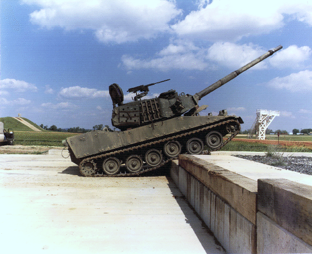

Characteristics
A light tank is a tank variant initially designed for rapid movements in and out of combat, to harass and outmaneuver heavier tanks. It is smaller in size with thinner armor and a less powerful main gun, tailored for better tactical mobility and ease of transport and logistics. They are primarily employed in the screening, armoured reconnaissance, skirmishing, artillery observation, and supplementing landing operations in a fire support role of expeditionary forces where larger, heavier tanks are unavailable or have difficulties operating safely or efficiently.
The fast light tank was a major feature of the pre-World War II army buildup, where it was expected they would be used to exploit breakthroughs in enemy lines created by slower, heavier tanks, with the goal of disrupting communications and supply lines. Numerous small tank designs and "tankettes" were developed during this period and known under a variety of names, including the "combat car".
Early light tank designs were generally better armed and armored than armored cars, but used tracks in order to provide better cross-country mobility. The light tank has been one of the few tank variants to survive the development of the main battle tank — in which technological advancements have rendered all previous weight variants obsolete — and has seen use in a variety of roles including the support of light airborne or amphibious forces and reconnaissance. Modified IFVs are assuming these roles in many militaries due to their immediate availability, and as a cheaper versatile alternative to developing and fielding a pure light tank.
The M8 Armored Gun System.
The Soviet BT tanks were the most advanced in the 1930s, extremely fast and mounting high velocity 45 mm cannons. Their only drawback were their petrol engines which caught fire often and easily during the Nomonhan fighting which lasted from about May through September 1939.The Japanese Type 95 Ha-Go light tank was equipped with a diesel engine, and although mounting a 37 mm cannon, it was a low velocity gun with a maximum effective range of about 700 meters. However, this conflict would be instrumental in developing the famous T-34 medium tank.